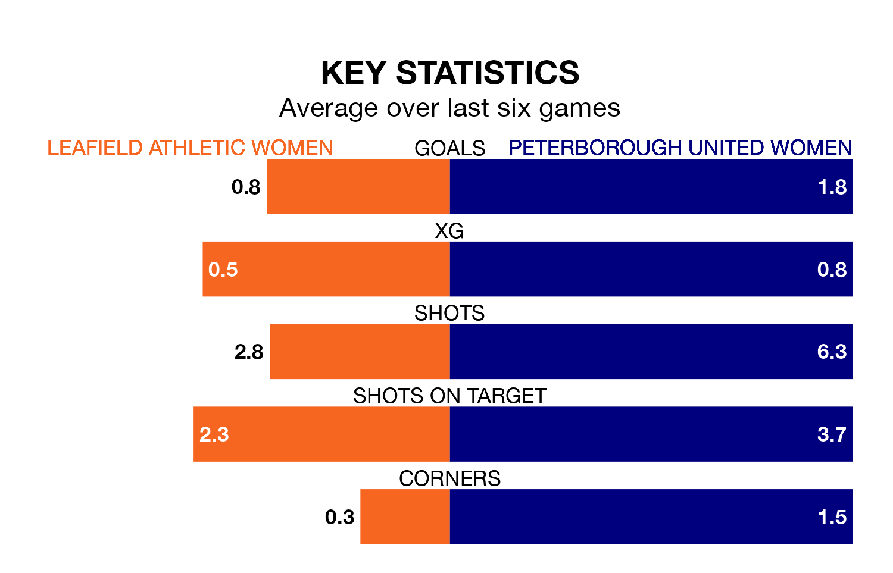

Struggling Leafield Athletic Women face Peterborough United Women on Sunday looking to build on a win in their last league outing.
After securing all three points with a 1-1 victory over Leek Town Women on January 28, Leafield Athletic sit bottom of Women's National League Division One Midlands.
They travel to play a Peterborough United side fourth in the standings, who lost in their last match, 5-0 against Sporting Khalsa Women.
With 11 goals in 13 games so far this season, Leafield Athletic are the league's second-lowest scorers with 0.8 goals per game. And they are conceding more than average, letting in 31 goals at a rate of 2.4 per game.
Peterborough United, meanwhile, are above average scorers, with 2.4 goals per game, compared to a league average of 1.8. They have conceded 1.7 goals per game.
The hosts are in terrible form in Women's National League Division One Midlands, with no wins and two draws from their last six games.
With four wins and two losses over that period, the away team's form is much better – they have taken 12 points from 18, compared to Leafield Athletic's two.
In the last five years, Leafield Athletic and Peterborough United have played each other on four occasions. Peterborough United won two of them and they drew twice.
On average, Leafield Athletic scored 0.5 goals and Peterborough United 1.5 in those matches.
Their last meeting was on March 19, when Peterborough United won 3-0 at home.
Updated: 14:12 (UTC), 02/02/24